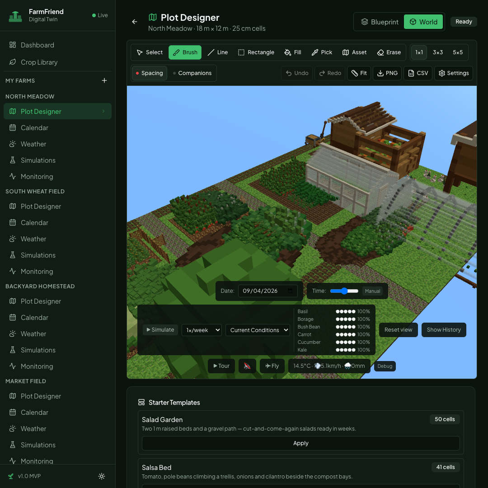
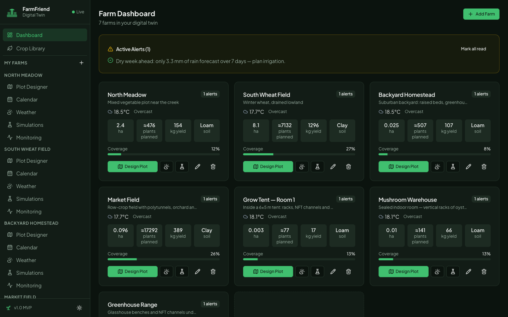
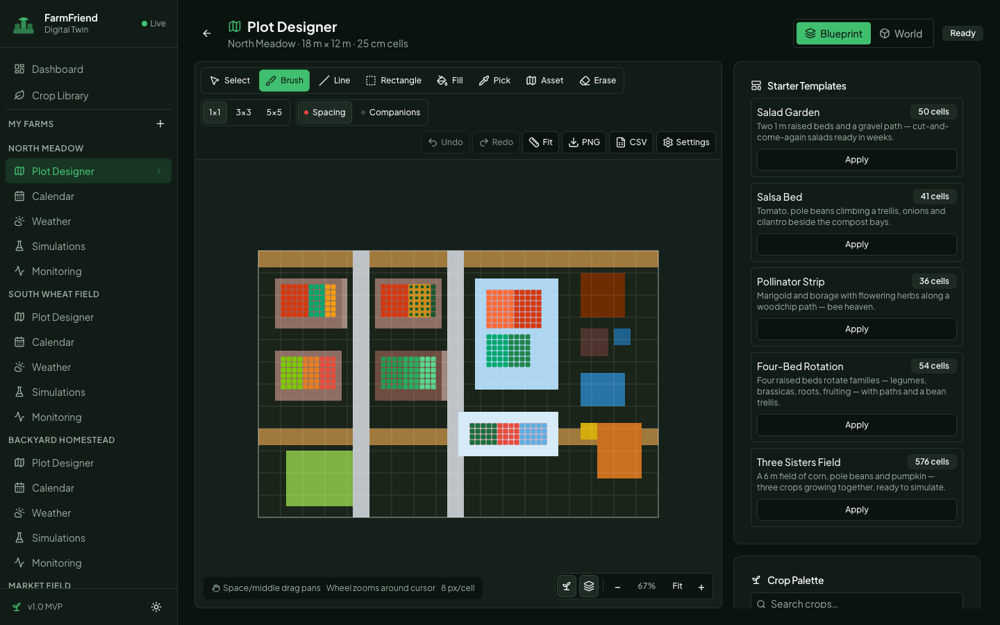
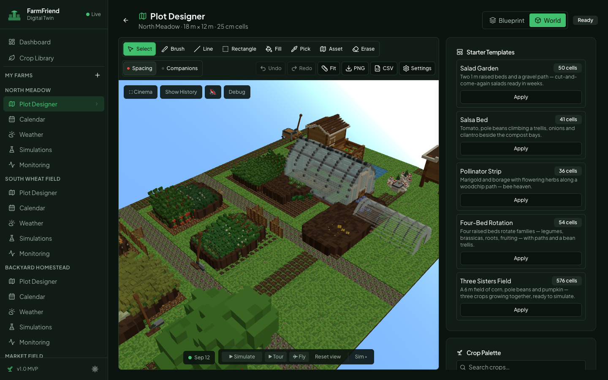
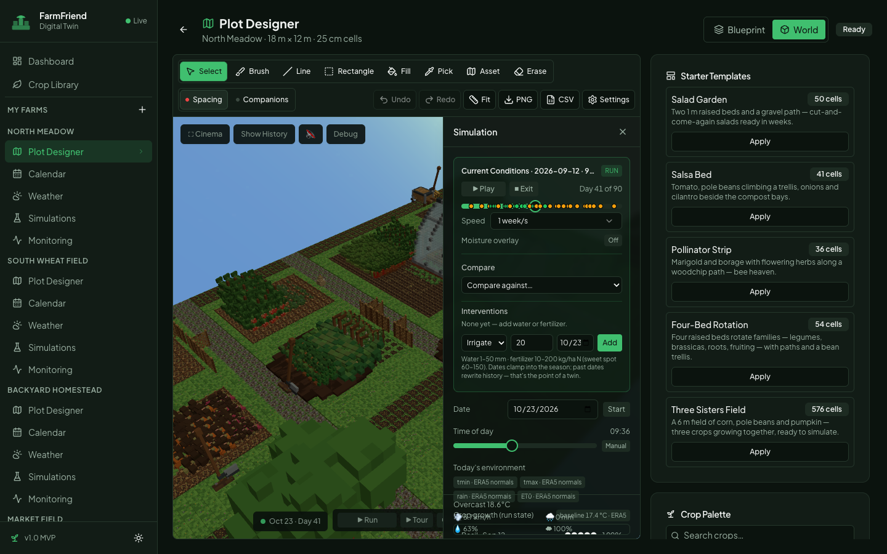
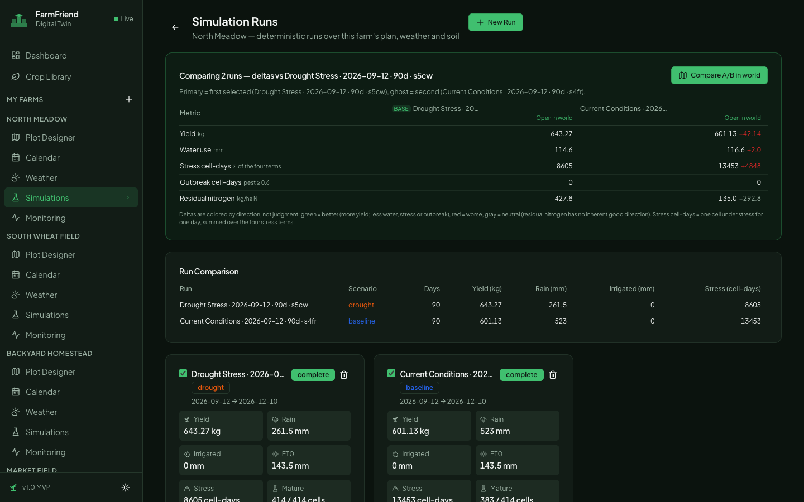
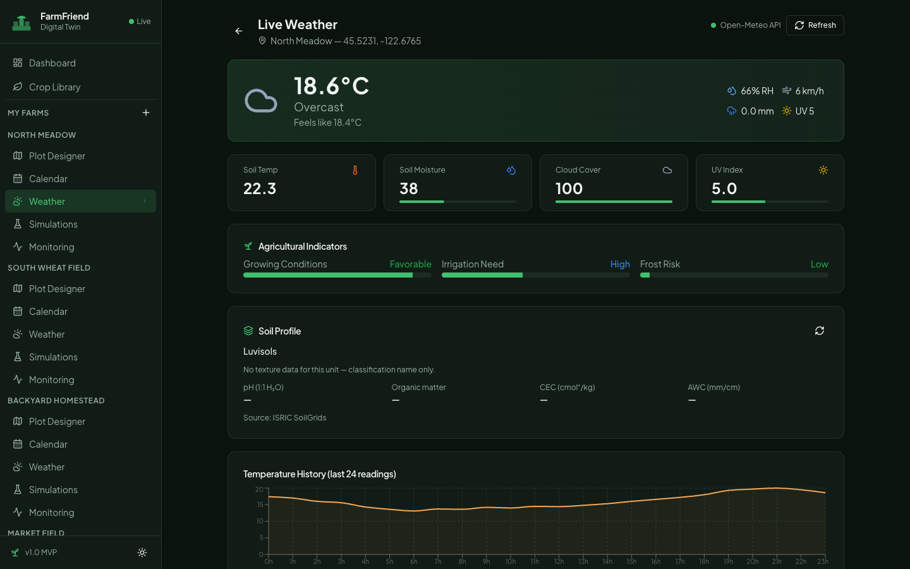
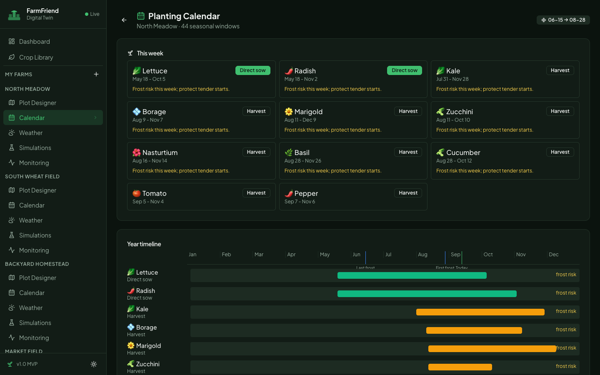
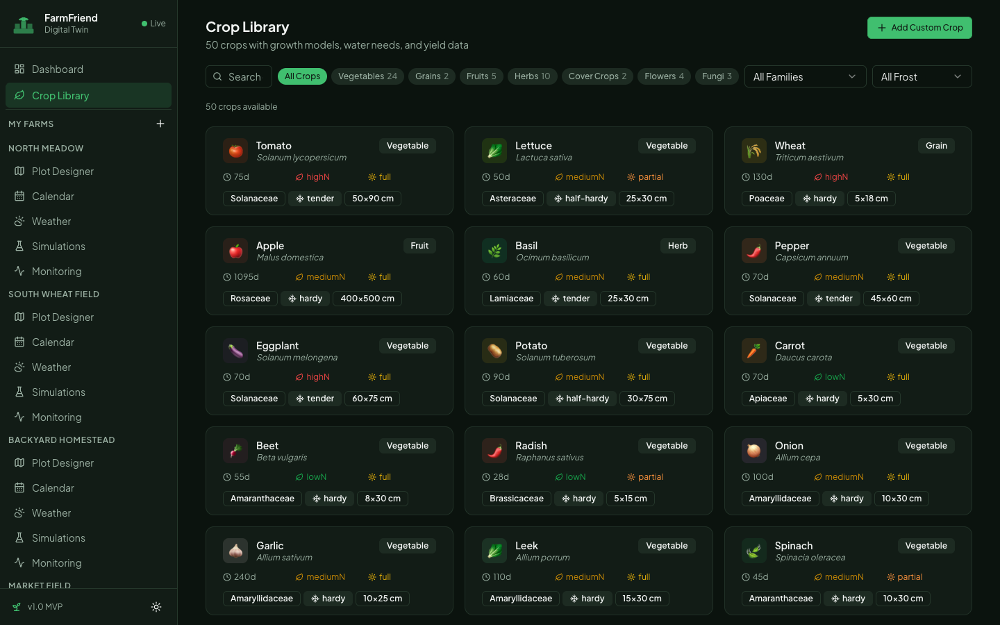
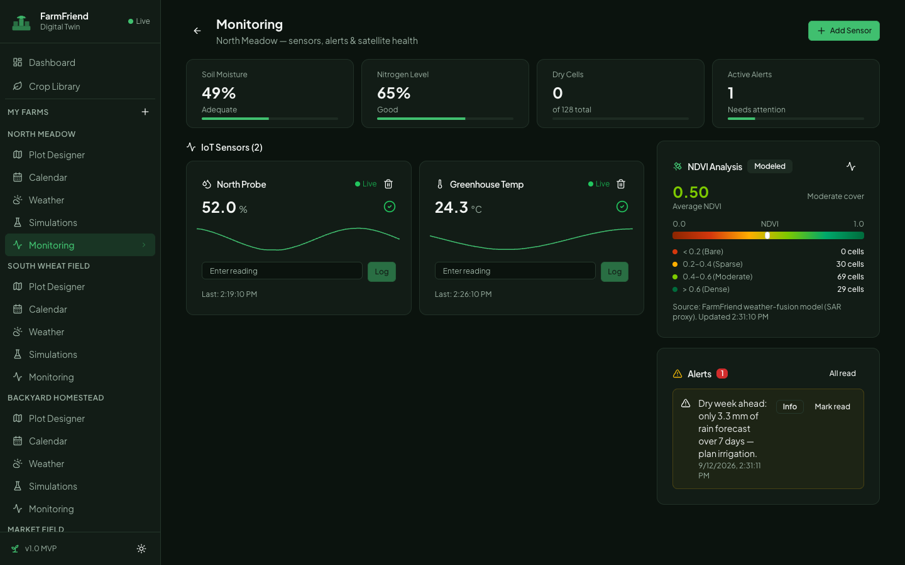

FarmFriend is a voxel digital twin for real gardens and small farms. Draw a scale-true blueprint of your plot, watch it stand up as a living 3D world, rehearse the season before you plant — then head outside and grow the real thing.
YOUR PLAN, STANDING UP — a drawing in the Blueprint becomes a walkable farm in World view. Every bed, plant, pond and barn comes from you.
Most garden planning happens in a spreadsheet — or in your head. FarmFriend gives your garden a twin: a living model of your beds, crops and season that you can walk through and experiment on before a single seed goes in the ground.
A scale-true map of your plot where every cell is 25 cm. Spacing mistakes happen on screen — not in soil.
One toggle and your plan stands up as a voxel farm — beds, greenhouses, ponds, animals, sky and weather.
Run the season before it happens. Drought year? Heatwave? Extra fertilizer? Compare, then choose.
Print the plan, export the seed list, follow the frost-safe calendar — and plant with confidence.

SAME PLAN, STANDING UP — beds, greenhouse, pond and crops, straight from the drawing.
Your plans save automatically in your browser — no account, no cloud, no setup. FarmFriend works offline and your data stays on your device. It's free and open source, and it runs on anything with a modern browser — laptop or tablet.
A farm is your home base — it holds the plan, the weather station and the calendar. You can keep as many as you like: a backyard, an allotment, a field.
From the Dashboard, click Add Farm and give it a name you'll recognise.
Type your town or village — FarmFriend fills in the location, which drives your live weather.
Last and first frost are estimated from your latitude and elevation. They shape your whole planting calendar — adjust them if you know your microclimate better.
From a 4×3 m backyard bed up to a 60×60 m field. You can change it any time in Settings.

ADD FARM — top right of the Dashboard. Each farm card already estimates plants, yield and soil from your plan.
Not sure where to start? Apply a starter template in the Plot Designer — Salad Garden, Salsa Bed, Pollinator Strip, Four-Bed Rotation or Three Sisters Field — then rearrange freely. One click of Undo restores the previous plan.
FarmFriend ships with a handful of demo farms — a market field, a greenhouse range, even a mushroom warehouse. Poke around in them as much as you like; when you add your own farm it keeps its own plan, weather and calendar.
The Plot Designer is where your farm takes shape: a canvas of 25 cm cells with real crops, real structures and real spacing math — so what you draw is what you can plant.

THE PLOT DESIGNER — tools up top, starter templates and palettes on the right. Spacing and companion checks run live while you draw.
Flip from Blueprint to World and your drawing stands up. Orbit around it, zoom in to a single bed, and watch the season move. It's the same plan — just alive.

WORLD VIEW — the North Meadow plan standing up at midday. The date chip and playback controls live along the bottom edge; orbit, zoom and fly with the mouse.
Hit Cinema to hide every panel for a full-screen walkthrough — and Show History to see ghost echoes of what you've changed. You can even plant and erase right in the 3D world; your edits flow straight back into the Blueprint.
February is for simulations. A run plays your farm through a whole season — day by day, using your plan, your weather and your soil — so you can test ideas while they're still cheap.
Pick a scenario: Current Conditions, Drought Stress, Heat Stress or Optimal Input.
Slide temperature (−10 to +10 °C) and rainfall (0–300 %) to build exactly the year you're worried about — or curious about.
Choose a start date and a length of 60–365 days. Each run is recorded so you can come back to it.
Watch the season unfold at a week per second — crops grow, weather rolls in, and struggling plants visibly yellow under stress.

MID-SEASON, DAY 41 — the drawer tracks the day, weather and stress. Add irrigation or fertilizer as interventions and watch what changes.
Every run keeps its scorecard — yield, rain, irrigation, plant stress. Compare them and the better choice usually picks itself.

TWO 90-DAY RUNS, SIDE BY SIDE — deltas are colour-coded: green means better (more yield, less water or stress), red means worse. Open both in the world to watch them play together.
Simulations are careful what-if estimates built on real crop data and historic weather patterns — brilliant for comparing plans, not a guarantee of harvest. Use them to choose between options, then let the season have the final word.
Each farm gets its own live weather station — real conditions and a 7-day forecast for your exact location, translated into terms a gardener can act on.

LIVE WEATHER — current conditions, soil temperature and moisture, agricultural indicators and the soil profile for your spot on the map.
The Dashboard collects alerts for all your farms in one banner — a dry week ahead, a cold snap coming — so one glance is enough before you head out.
Your frost dates plus each crop's real needs become a year-round schedule: sow indoors, transplant out, direct sow and harvest — computed for every crop in your plan.

THE PLANTING CALENDAR — “This week” tells you what to do right now; the year timeline lays out every crop's windows between last and first frost.
Frost dates are estimated from your location — if your garden runs warm or cold, override them in your farm settings and every window shifts to match.

CROP LIBRARY — 50 crops with the numbers that matter.

MONITORING — a health snapshot for every farm.
Where does my data live? In your browser, on this device. Nothing is uploaded.
Does it cost anything? No — FarmFriend is free and open source (MIT).
Tablet? Yes — draw with touch, pinch to zoom.
Is it a game? It looks like one. The numbers underneath are real horticulture.
HAPPY GROWING — FROM THE FARMFRIEND TEAM